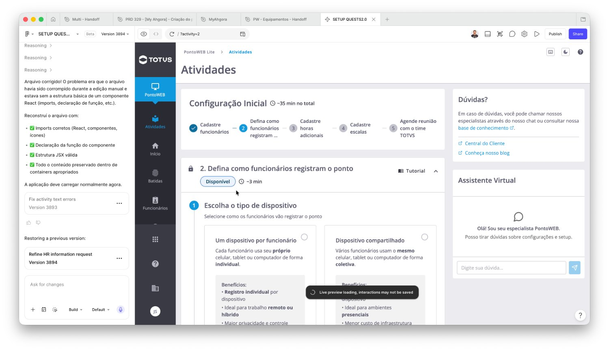
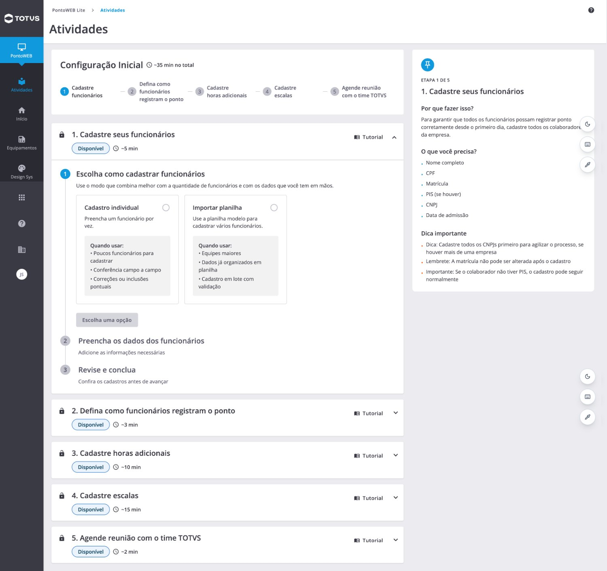
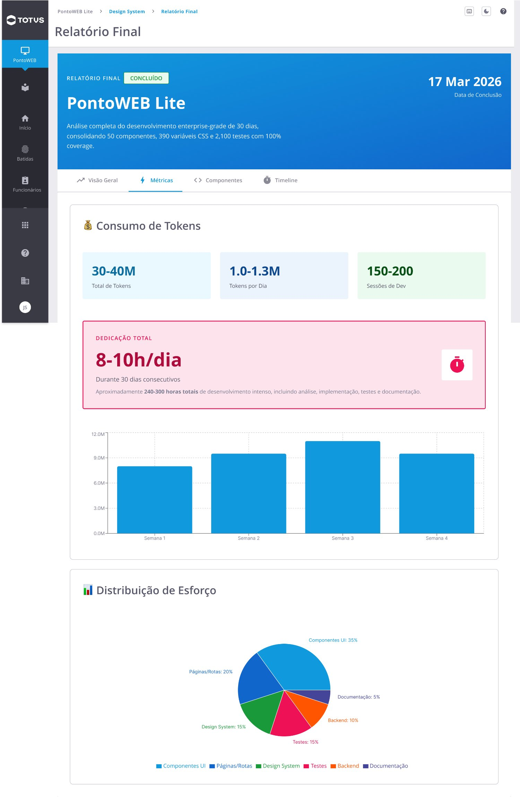
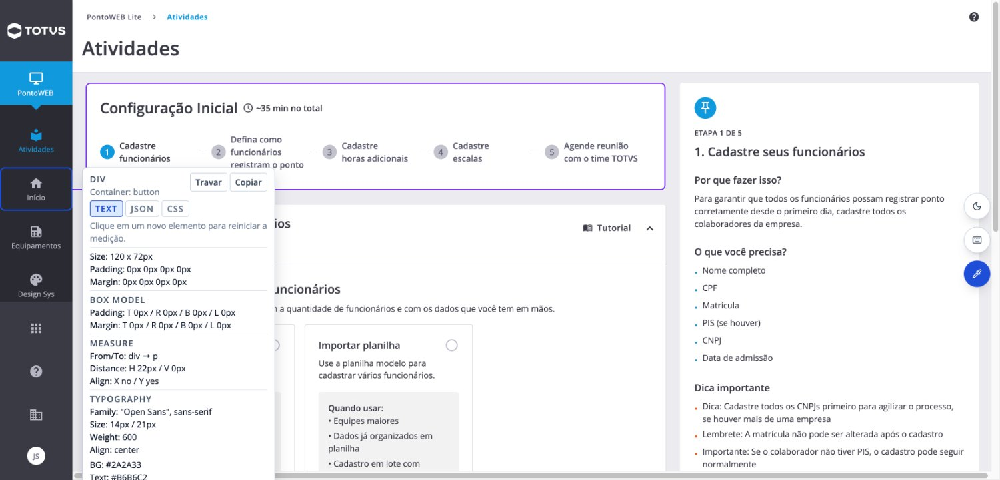
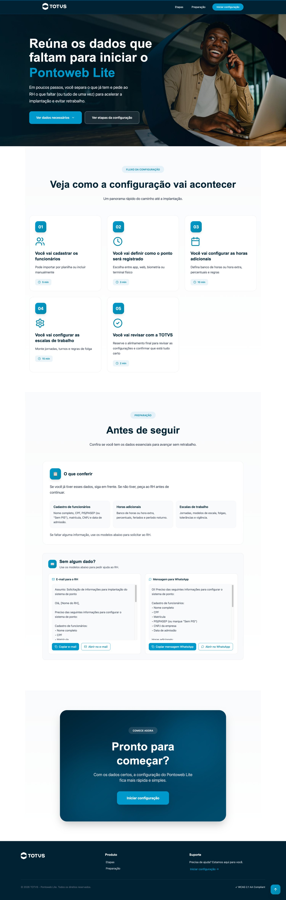
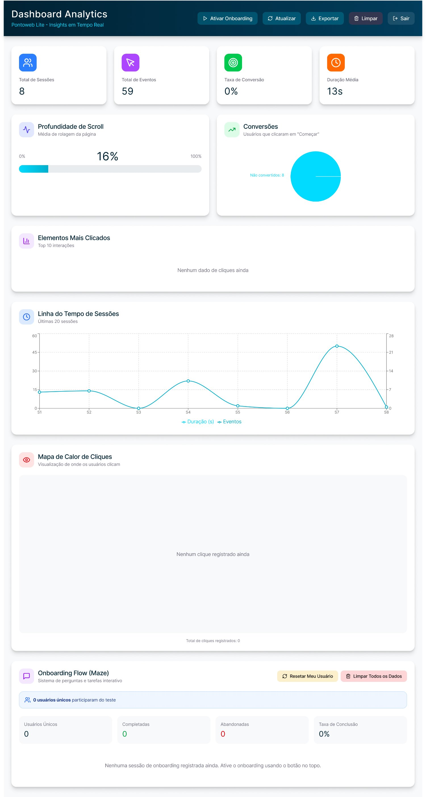

Do protótipo estático aoprotótipo operacional
Como a IA está mudando meu fluxo de design

Agenda
Small Talk · aproximadamente 40 minutos

O protótipo está deixando de ser apenas uma representação visual e começando a funcionar como ambiente de construção, validação, documentação e aprendizado.
AberturaUma experiência, não uma metodologia
No início, era muito simples
Eu usava a IA como um segundo olhar sobre o que eu desenhava.
Eu criava uma tela no Figma, como sempre fiz no meu fluxo de design.
Tirava um print e pedia uma avaliação — um segundo olhar, não um substituto da minha.
Perguntava sobre hierarquia, legibilidade, acessibilidade, clareza dos textos e onde o fluxo poderia melhorar.
Não comecei querendo automatizar design. Comecei querendo melhorar a qualidade da reflexão.
Como a IAentrou no meu processo
A IA entrou como crítica
Uma verificação intermediária, muito mais sistemática.
Quando eu criava alguma coisa, podia pedir uma leitura sobre:
A IA começou como um segundo olhar crítico, não como uma máquina de fazer telas.
O desafio com oFigma Make
Laboratório de aprendizagem
Reconstruir um produto real
Ponto Web Lite, dentro do Figma Make
Apareceu uma comunicação dizendo que os créditos livres poderiam acabar. Decidi me desafiar: construir o máximo possível do produto na ferramenta.
Não era só economizar créditos ou gerar telas rápido. Eu queria entender a fundo como a ferramenta funcionava — e, construindo algo real e complexo, encontrar seus limites, problemas e oportunidades.

O protótipo crescendocomo produto
Deixou de ser uma imagem navegável
Uma parte significativa do Ponto Web Lite já está representada nesse ambiente.
Em um protótipo tradicional, representamos a interface e simulamos alguns caminhos. Aqui, comecei a construir uma experiência muito mais próxima de um produto funcional.
Comportamento
Fluxos, estados e regras reagindo como reagiriam no produto.
Lógica
Não só telas: condições, caminhos e respostas às ações.
Componentes e documentação
Próximos da realidade — também o app My Ahgora e outros experimentos.
Foi aí que comecei a perceber que talvez eu não estivesse mais fazendo apenas um protótipo.
Design System eproximidade com a realidade
Conectado ao nosso Design System
Não uma experiência solta, desconectada do produto.
Nossos componentes e regras
Mais valor para discutir com produto, engenharia e outras áreas.
Segunda fonte de verdade
Não substitui o Figma nem a documentação oficial — representa regras de forma executável.
Distância menor
Aumenta a simulação e reduz a distância entre ideia e implementação.
Demonstração 1
Um fluxo do PW Lite com o Design System
Telas, estados e comportamentos construídos sobre os componentes da TOTVS.
Aqui mostro um fluxo real reconstruído no ambiente, usando o Design System conectado ao projeto — o mais próximo possível da experiência final.
rem-domain-60342137.figma.site/?activity=1

Acessibilidadeintegrada ao processo
O que eu passei a avaliar
Depois de finalizar uma página ou fluxo, pedia avaliações mais completas.
Navegação por teclado e ordem de foco
Sequência de leitura e foco
Legibilidade e contraste
Semântica e estrutura dos componentes
Possíveis problemas para VoiceOver
Não substitui uma auditoria especializada nem testes reais com tecnologias assistivas. Mas cria uma camada intermediária de controle que antes não existia de maneira tão acessível e recorrente.
Acessibilidade deixou de ser apenas uma verificação no final e começou a participar da construção.
Documentação geradaa partir da construção
O ambiente já tem contexto
Quando o componente tem regras, estados e comportamentos claros.
Eu podia solicitar a documentação daquele componente:
Demonstração 2
Avaliação e documentação de um componente
A documentação nasce do comportamento que já foi construído.
Em vez de depender da memória do designer algum tempo depois, construção e documentação acontecem no mesmo ambiente.
rem-domain-60342137.figma.site/design-system-toaster
rem-domain-60342137.figma.site/design-system-figma-make-guide
rem-domain-60342137.figma.site/design-system-ux-writing
rem-domain-60342137.figma.site/relatorio-final

Construção e documentação começam a acontecer no mesmo ambiente.
A lupa e a ausênciado Dev Mode
Experimento
Uma lupa dentro do protótipo
Modo de inspeção sobre os elementos.
Ao passar sobre os elementos, ela apresenta informações do componente — medidas, propriedades, nomes e dados relevantes. Surgiu de uma limitação concreta: nem todas as pessoas têm acesso ao Dev Mode.
Ainda é uma exploração. Mas mostra outra possibilidade: o protótipo também pode funcionar como camada de comunicação com desenvolvimento.

A landing pagede preparação
Demonstração 3
Uma página de preparação
Ponto Web Lite — antes de iniciar a jornada de cadastro.
O problema era simples: a pessoa precisava saber quais documentos e informações ter em mãos antes de começar.
Hipótese: uma preparação prévia pode reduzir interrupções, dúvidas e abandono durante o onboarding.
twins-broil-21673025.figma.site

Analytics eMaze interno
A página já nasce para aprender
Em vez de configurar tudo em uma ferramenta externa.
Onde e quanto clicaram
Quais partes foram utilizadas e quais caminhos as pessoas seguiram.
Onde houve abandono
Para entender o comportamento real na jornada.
Área administrativa
Para consultar essas informações dentro do próprio ambiente.
Demonstração 3 · continuação
Métricas e Maze interno
Área administrativa para observar a experiência.
Hoje conseguimos criar rapidamente pequenas infraestruturas de teste e observação. O Maze tem recursos e confiabilidade próprios — o ponto é mostrar que a observação pode nascer junto com o protótipo.
twins-broil-21673025.figma.site/admin

Eu não queria apenas publicar a landing page. Eu queria que ela já nascesse preparada para aprender.
O protótipooperacional
Um espaço intermediário
No qual conseguimos:
Simular comportamentos
Testar hipóteses
Instrumentar interações
Avaliar acessibilidade
Documentar e aprender
O valor não está apenas em parecer real. Está em permitir decisões melhores antes da implementação definitiva.
Um protótipo que não apenas representa uma solução: ele ajuda a testá-la, explicá-la e aprender com ela.
O quenão funciona bem
Também é preciso falar dos limites
Quanto maior o projeto, maior a necessidade de supervisão e organização.
Elas podem:
Quanto mais rápido conseguimos construir, mais importante se torna saber o que não devemos construir.
O que mudou no meupapel como designer
Talvez eu esteja desenhando também sistemas
O designer não está deixando de desenhar.
Dedico menos tempo a operações manuais e mais tempo a estruturar o problema, explicitar regras e decidir o que merece continuar — desenhando instruções, critérios e ambientes de aprendizado.
Estruturar e explicitar
Organizar o problema e tornar as regras explícitas.
Avaliar e testar
Revisar comportamento, testar hipóteses, avaliar o resultado.
Conectar e decidir
Aproximar produto, design e tecnologia — e decidir o que segue.
O que eu queria que ficasse
Três ideias para levar desta conversa.
IA em problemas reais
Não apenas demonstrações — uso em produtos e fluxos reais.
Ambiente de aprendizado
O protótipo pode se tornar um lugar onde se aprende antes de construir.
Mais curadoria
O papel do designer passa a incluir estruturação e validação.
O que vocês já experimentaram com IA que mudou de verdade a forma como trabalham — e não apenas a velocidade?

As informações, produtos e marcas contidas nesta apresentação são de propriedade intelectual da TOTVS e não podem ser divulgadas, compartilhadas, publicadas ou utilizadas sem autorização expressa da TOTVS, sob pena de responsabilização cível e criminal do infrator, nos termos do quanto disposto na Lei n. 9.279/1996.
© TOTVS — Todos os direitos reservados.